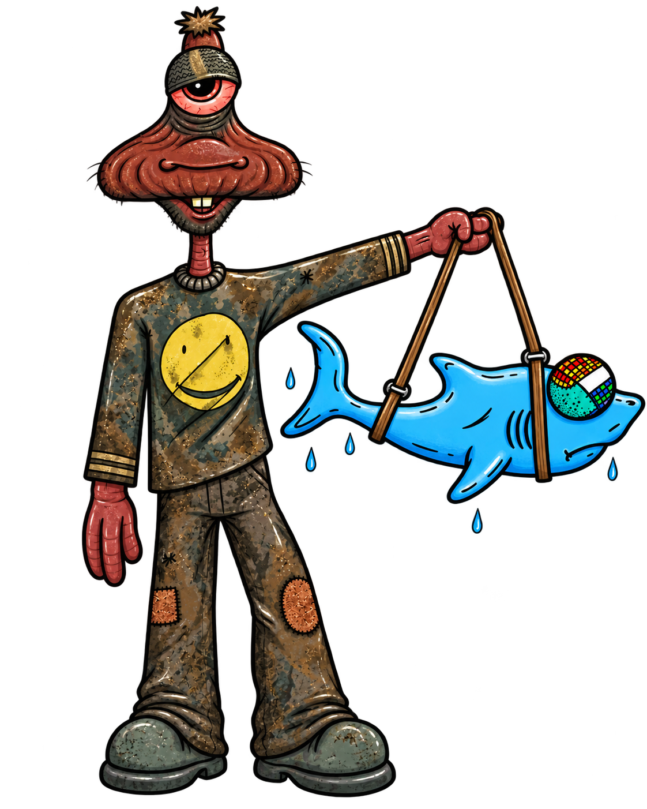
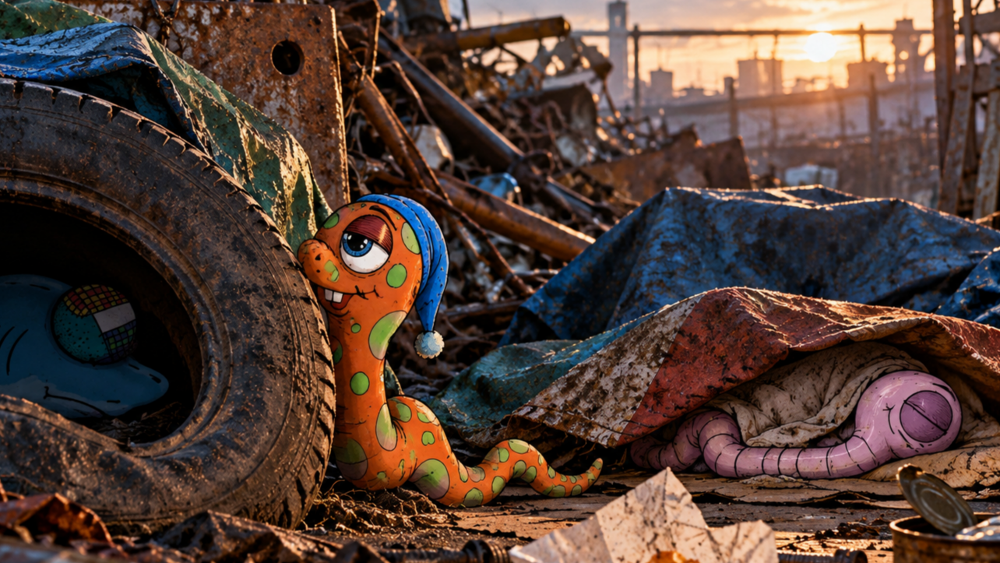

NEW
NEWEARLY BIRDS
Protect Eric from the early birds. Rufus will take care of the rest.
PLAY NOW →
He woke up
in a scrapyard.
He doesn't know
where he is.
He doesn't know
where Nigel is.
He doesn't remember
what happened last night.
He's taking it remarkably well.
START ERIC'S STORY →They're worms. Something happened to them. They don't know what.
They travel around, encounter increasingly improbable situations, and occasionally discover things about themselves that they'd probably have been happier not knowing.
There are festivals. There are hallucinations. There is a shark who thinks he's a dog. And somewhere out there is Nigel's scrapyard.
Nobody is entirely sure what happened. Including the worms.
Scene 01 — The Morning After

Scene 01 — The Morning After
“Places have a way of introducing themselves when they're ready.”
Eric keeps quiet for a bit.
He's among old tyres, scrap metal and things he doesn't immediately recognise. Somewhere nearby, something is breathing.
Another worm is asleep.
Nigel is missing.
Eric investigates carefully. He notices the tyre. He notices the breathing. He decides not to be the first thing it has for breakfast.
And then he waits.
Play, laugh, get distracted. It's all part of the journey.
NEWProtect Eric from the early birds. Rufus will take care of the rest.
PLAY NOW →
Help Eric get into the festival without paying.
PLAY NOW →
Turn useless junk into something brilliant.
PLAY NOW →
Help Rufus catch the thing Nigel throws.
PLAY NOW →A few worms, a shark, and other interesting types.

Curious. Friendly. Generally optimistic. Things may get remarkably well.

Owner of The High Scraparral. Practical. Usually involved in something.

Chilled. Mysterious. Usually knows more than she says.

A shark. Believes he is a dog. Loyal. Hungry. Complicated.
Strange places. Unexplained things. A few hints.
Nigel's scrapyard and home. Full of interesting things.

Music. Lights. Worms. Things get weird.
Something important happened here. Eric remembers bits.
Don't ask. Not yet anyway.
Be part of the story. Talk to Eric. Share. Speculate. See what happens.
Reply to @wormonacid with your ideas, advice, questions or just say hello. Eric might listen. He might ignore you. He might misunderstand you.
𝕏 @wormonacidSomething happened. Someone said something. Eric may or may not have noticed.
VIEW MORE ON X →